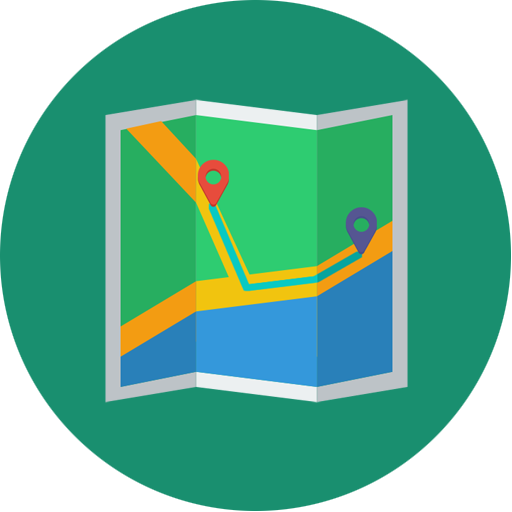

Profil
Desa Belambangan, Kec. Penengahan, Kab. Lampung Selatan, Lampung
-

Pemekaran
Desa Belambangan merupakan desa hasil dari pemekaran desa Rawi Kec.Penengahan.
-
Penduduk
Terdata January 2024, Desa Belambangan memiliki total penduduk yaitu 1662 jiwa, dengan total penduduk bergender laki-laki yaitu 829 jiwa, dan total penduduk bergender perempuan 833 jiwa. Lalu data penduduk dengan usia 0 - 15 tahun berjumlah 385 jiwa, penduduk usia 15 - 65 berjumlah 985, dan penduduk dengan usia 65 ke atas berjumlah 292 jiwa.
-

Pekerjaan
Penduduk desa Belambangan mayoritas memiliki pekerjaan sebagai pedagang dan juga terdapat petani/pekebun
-
Desa
Belambangan